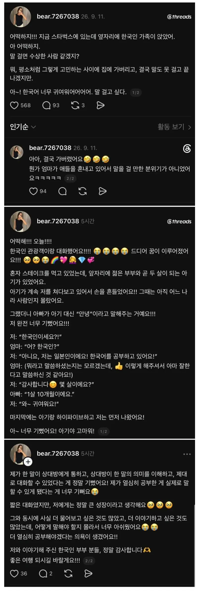

한국어 공부하는 일본인의 꿈
댓글
일녀와 무슨. 관계지?
아무 관계아니라면.
서로 얼굴 붉힐일 없이.
순서 지킬것.
이상.
개드립을 대표해서 막지 못해 사과드립니다.
야이 !! 놔!! 너 누구야!! 읍읍!!
혐한제조죄로 체포하겠습니다.
그냥 미친놈이 가게 된 점 사죄드립니다...ㅠㅠ
잇쇼니사케노무?

전쟁나겠군 라면생수사러간다
야 그렇다고 3번째 폭탄을..읍읍
버스 노쇼 일어날 만 하네
당장가서 혼내주자
일본어 좀 배워서 여행온 일본인들과 대화했던 기억이.. 경북궁 롯데월드는 최고였음..
일본 갔다가 커피 너무 땡겨서 스타벅스 갔는데 알바생 갑자기 한국어 유창하게 말 걸음;;;
한국인인가? 워홀같은건가? 했는데 일본인 이었음 ㅎㄷㄷ;;;;
일본사는데, 진짜 한국인 인기 장난 아님.
나도 처음에는 인터넷 씹소린줄 알았는데 아니더라
20대 초반에 일본인 손님이랑 4시간동안 수다떨면서 느꼈던 감정...
공부한 언어 현지인한테 먹히면 재밌지...
개드립 공식 훈남 개붕이 지금 그녀에게 고백하러 갑니다.
한.일 양국의 우호를 위해서 내가 간다.